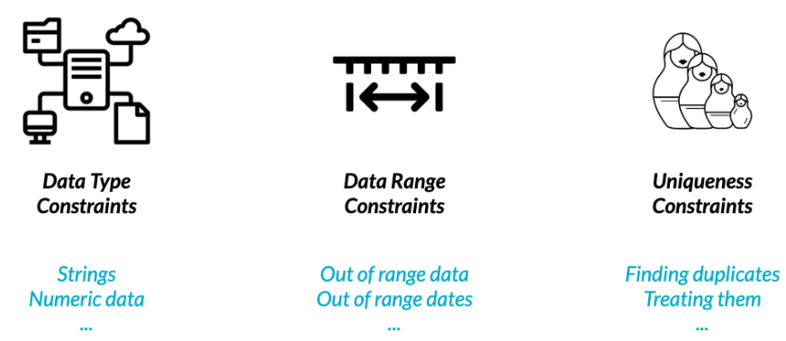
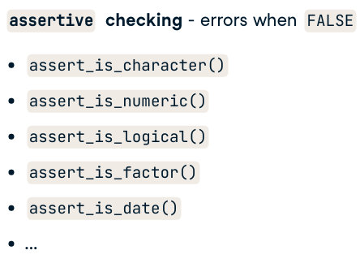
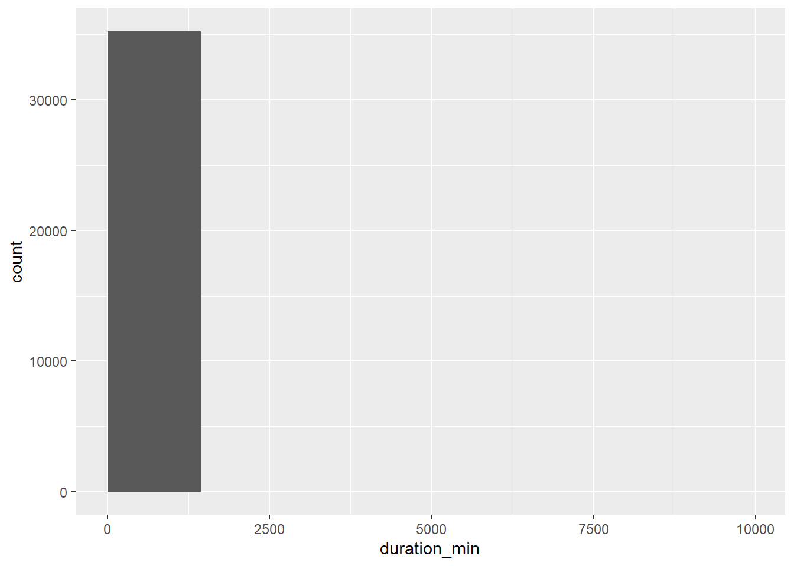
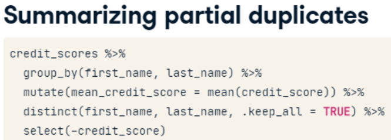

Last updated: 2022-11-16
Checks: 7 0
Knit directory: Misean/
This reproducible R Markdown analysis was created with workflowr (version 1.7.0). The Checks tab describes the reproducibility checks that were applied when the results were created. The Past versions tab lists the development history.
Great! Since the R Markdown file has been committed to the Git repository, you know the exact version of the code that produced these results.
Great job! The global environment was empty. Objects defined in the global environment can affect the analysis in your R Markdown file in unknown ways. For reproduciblity it’s best to always run the code in an empty environment.
The command set.seed(20221115) was run prior to running
the code in the R Markdown file. Setting a seed ensures that any results
that rely on randomness, e.g. subsampling or permutations, are
reproducible.
Great job! Recording the operating system, R version, and package versions is critical for reproducibility.
Nice! There were no cached chunks for this analysis, so you can be confident that you successfully produced the results during this run.
Great job! Using relative paths to the files within your workflowr project makes it easier to run your code on other machines.
Great! You are using Git for version control. Tracking code development and connecting the code version to the results is critical for reproducibility.
The results in this page were generated with repository version 35dcbbc. See the Past versions tab to see a history of the changes made to the R Markdown and HTML files.
Note that you need to be careful to ensure that all relevant files for
the analysis have been committed to Git prior to generating the results
(you can use wflow_publish or
wflow_git_commit). workflowr only checks the R Markdown
file, but you know if there are other scripts or data files that it
depends on. Below is the status of the Git repository when the results
were generated:
Ignored files:
Ignored: .Rhistory
Untracked files:
Untracked: data/trip.csv
Untracked: donation-tracking-excel-templates (2).zip
Untracked: donation-tracking-excel-templates/
Untracked: kickstarter.zip
Untracked: kickstarter/
Note that any generated files, e.g. HTML, png, CSS, etc., are not included in this status report because it is ok for generated content to have uncommitted changes.
These are the previous versions of the repository in which changes were
made to the R Markdown (analysis/common-data-problems.Rmd)
and HTML (docs/common-data-problems.html) files. If you’ve
configured a remote Git repository (see ?wflow_git_remote),
click on the hyperlinks in the table below to view the files as they
were in that past version.
| File | Version | Author | Date | Message |
|---|---|---|---|---|
| Rmd | 35dcbbc | JJCoen | 2022-11-16 | wflow_publish("analysis/*") |

Throughout this chapter, you’ll be working with San Francisco bike share ride data called bike_share_rides. It contains information on start and end stations of each trip, the trip duration, and some user information.
Defensive Programming

ref: https://campus.datacamp.com/courses/cleaning-data-in-r/common-data-problems?ex=1
Before beginning to analyze any dataset, it’s important to take a
look at the different types of columns you’ll be working with, which you
can do using glimpse().
In this exercise, you’ll take a look at the data types contained in bike_share_rides and see how an incorrect data type can flaw your analysis.
dplyr and assertive are loaded and
bike_share_rides is available.
Examine the data types of the columns of bike_share_rides. Get a summary of the user_birth_year column of bike_share_rides.
bike_share_rides <- read_csv("./data/trip.csv",
n_max = 35229) %>%
as.data.table
# problems(bike_share_rides)
# Glimpse at bike_share_rides
summary(bike_share_rides) id duration start_date start_station_name
Min. : 4069 Min. : 60 Length:35229 Length:35229
1st Qu.:16615 1st Qu.: 398 Class :character Class :character
Median :28191 Median : 622 Mode :character Mode :character
Mean :28099 Mean : 1574
3rd Qu.:39688 3rd Qu.: 989
Max. :51121 Max. :597517
start_station_id end_date end_station_name end_station_id
Min. : 2.0 Length:35229 Length:35229 Min. : 2.0
1st Qu.:49.0 Class :character Class :character 1st Qu.:49.0
Median :60.0 Mode :character Mode :character Median :60.0
Mean :56.3 Mean :56.3
3rd Qu.:70.0 3rd Qu.:70.0
Max. :77.0 Max. :77.0
bike_id subscription_type zip_code
Min. : 9 Length:35229 Min. : 1001
1st Qu.:347 Class :character 1st Qu.:94103
Median :448 Mode :character Median :94110
Mean :437 Mean :88970
3rd Qu.:552 3rd Qu.:94403
Max. :717 Max. :99999
NA's :2500 factor data type bike_share_rides dataset contains
the variable subscription_type which needs to be converted
from character to factor
This variable groups each trip according to year and is a categorical variable.
bike_share_rides[ , subscription_type_fct := as.factor(subscription_type)]
assert_is_factor(bike_share_rides$subscription_type_fct)
# Summary
summary(bike_share_rides$subscription_type_fct) Customer Subscriber
12565 22664 Dapper data type dexterity! In the previous exercise, you were able
to identify the correct data type and convert
subscription_type to the correct data type, allowing you to
extract counts that gave you a bit more insight into the dataset.
Suppose we have a variable:
$ duration <chr> "1316.15 minutes", "8.13 minutes", "24.85 minutes"...
Another common dirty data problem is having extra bits like percent signs or periods in numbers, causing them to be read in as characters. In order to be able to crunch these numbers, the extra bits need to be removed and the numbers need to be converted from character to numeric. In this exercise, you’ll need to convert the duration column from character to numeric, but before this can happen, the word “minutes” needs to be removed from each value.
dplyr, assertive, and stringr are loaded and bike_share_rides is available.
Use str_remove() to remove “minutes” from the duration column of bike_share_rides. Add this as a new column called duration_trimmed.
Convert the duration_trimmed column to a numeric type and add this as a new column called duration_mins.
Glimpse at bike_share_rides and assert that the duration_mins column is numeric.
bike_share_rides <- bike_share_rides %>%
mutate(duration_trimmed = str_remove(duration, "minutes"),
duration_mins = as.numeric(duration_trimmed))
# Glimpse at bike_share_rides
glimpse(bike_share_rides)
# Assert duration_mins is numeric
assert_is_numeric(bike_share_rides$duration_mins)bike_share_rides[, summary(duration)] Min. 1st Qu. Median Mean 3rd Qu. Max.
60 398 622 1574 989 597517 Convert duration from seconds to minutes.
bike_share_rides[ , duration_min := duration / 60]
assert_is_numeric(bike_share_rides$duration_min)1. Remove Rows
Consider imbd film ratings - values are between 0 and 5.
films %>%
filter(avg_rating >= 0, avg_rating <=5) %>%
ggplot(aes(avg_rating)) +
geom_histogram(breaks =
c(min(avg_rating), 0, 5, max(avg_rating)))2 Replace with range limit
replace(col, condition, replacement)
Values that are out of range can throw off an analysis, so it’s
important to catch them early on. In this exercise, you’ll be examining
the duration_min column more closely. Bikes are not allowed
to be kept out for more than 24 hours, or 1440 minutes at a time, but
issues with some of the bikes caused inaccurate recording of the time
they were returned.
In this exercise, you’ll replace erroneous data with the range limit (1440 minutes), however, you could just as easily replace these values with NAs.
dplyr, assertive, and ggplot2 are loaded and bike_share_rides is available.
duration_min column
of bike_share_rides using ggplot2 to identify if there is out-of-range
data.# Create breaks
fivenum(bike_share_rides$duration_min)[1] 1.00 6.63 10.37 16.48 9958.62breaks <- c(min(bike_share_rides$duration_min), 1440, max(bike_share_rides$duration_min))
# Create a histogram of duration_min
ggplot(bike_share_rides, aes(duration_min)) +
geom_histogram(breaks = breaks)
bike_share_rides[ , duration_min_const :=
replace(duration_min,
duration_min > 1440,
1440) ]
assert_all_are_in_closed_range(bike_share_rides$duration_min_const,
lower = 0,
upper = 1440)Date.
Having these as Date objects will make it much easier to
figure out which rides are from the future, since R makes it easy to
check if one Date object is before (<) or after (>) another.assert_all_in_past()
dplyr and assertive are loaded and bike_share_rides is available.
Convert the date column of bike_share_rides from character to the
Date data type.
Assert that all values in the date column happened sometime in the past and not in the future.
Filter bike_share_rides to get only the rides from
the past or today, and save this as bike_share_rides_past.
Assert that the dates in bike_share_rides_past occurred only in the past.
library(lubridate)
# Convert date to Date type
bike_share_rides <- bike_share_rides %>%
mutate(start_date = as.Date(start_date))
# Make sure all dates are in the past
assert_all_are_in_past(bike_share_rides$date)
# Filter for rides that occurred before or on today's date
bike_share_rides_past <- bike_share_rides %>%
filter(date < today())
# Make sure all dates from bike_share_rides_past are in the past
assert_all_are_in_past(bike_share_rides_past$date)“Fabulous filtering! Handling data from the future like this is much easier than trying to verify the data’s correctness by time traveling.”
3 Treat as NA
replace(col, condition, replacement)
4 Replace with value based on domain knowledge
Why do duplicates occur?
Finding full duplicates duplicated(credit_score) %>% sum()
filter(credit_score, duplicated(credit_score)
You’ve been notified that an update has been made to the bike sharing data pipeline to make it more efficient, but that duplicates are more likely to be generated as a result. To make sure that you can continue using the same scripts to run your weekly analyses about ride statistics, you’ll need to ensure that any duplicates in the dataset are removed first.
When multiple rows of a data frame share the same values for all columns, they’re full duplicates of each other. Removing duplicates like this is important, since having the same value repeated multiple times can alter summary statistics like the mean and median. Each ride, including its ride_id should be unique.
dplyr is loaded and bike_share_rides is available.
Get the total number of full duplicates in bike_share_rides. Remove all full duplicates from bike_share_rides and save the new data frame as bike_share_rides_unique. Get the total number of full duplicates in the new bike_share_rides_unique data frame.
# Count the number of full duplicates
nrow(bike_share_rides) - nrow( distinct(bike_share_rides))
# Remove duplicates
bike_share_rides_unique <- distinct(bike_share_rides)
# Count the full duplicates in bike_share_rides_unique
nrow(bike_share_rides_unique) - nrow( distinct(bike_share_rides_unique)) Dazzling duplicate removal! Removing full duplicates will ensure that summary statistics aren’t altered by repeated data points.
credit_scores %>% distinct(first_name, last_name, .keep_all = TRUE)
Now that you’ve identified and removed the full duplicates, it’s time to check for partial duplicates. Partial duplicates are a bit tricker to deal with than full duplicates. In this exercise, you’ll first identify any partial duplicates and then practice the most common technique to deal with them, which involves dropping all partial duplicates, keeping only the first.
Count the number of occurrences of each ride_id. Filter for ride_ids that occur multiple times.
# Find duplicated ride_ids
bike_share_rides %>% duplicated()
# Count the number of occurrences of each ride_id
bike_share_rides %>%
count( ride_id)
# Filter for rows with a count > 1
bike_share_rides %>%
count( ride_id) %>%
filter(n > 1)# Find duplicated ride_ids
bike_share_rides %>%
count(ride_id) %>%
filter(n > 1)
# Remove full and partial duplicates
bike_share_rides_unique <- bike_share_rides %>%
# Only based on ride_id instead of all cols
distinct(ride_id, .keep_all = TRUE)
# Find duplicated ride_ids in bike_share_rides_unique
bike_share_rides_unique %>%
# Count the number of occurrences of each ride_id
count(ride_id) %>%
# Filter for rows with a count > 1
filter(n > 1)
Another way of handling partial duplicates is to compute a summary statistic of the values that differ between partial duplicates, such as mean, median, maximum, or minimum. This can come in handy when you’re not sure how your data was collected and want an average, or if based on domain knowledge, you’d rather have too high of an estimate than too low of an estimate (or vice versa).
Group bike_share_rides by ride_id and date. Add a column called duration_min_avg that contains the mean ride duration for the row’s ride_id and date. Remove duplicates based on ride_id and date, keeping all columns of the data frame. Remove the duration_min column.
bike_share_rides %>%
# Group by ride_id and date
group_by(ride_id, date) %>%
# Add duration_min_avg column
mutate(duration_min_avg = mean(duration_min) ) %>%
# Remove duplicates based on ride_id and date, keep all cols
distinct(ride_id, date, .keep_all = TRUE) %>%
# Remove duration_min column
select(-duration_min)
sessionInfo()R version 4.2.1 (2022-06-23 ucrt)
Platform: x86_64-w64-mingw32/x64 (64-bit)
Running under: Windows 10 x64 (build 22000)
Matrix products: default
locale:
[1] LC_COLLATE=English_United States.utf8
[2] LC_CTYPE=English_United States.utf8
[3] LC_MONETARY=English_United States.utf8
[4] LC_NUMERIC=C
[5] LC_TIME=English_United States.utf8
attached base packages:
[1] stats graphics grDevices utils datasets methods base
other attached packages:
[1] tinytex_0.40 ggplot2_3.3.6 stringr_1.4.1 assertive_0.3-6
[5] dplyr_1.0.10 readr_2.1.3 data.table_1.14.2 workflowr_1.7.0
loaded via a namespace (and not attached):
[1] Rcpp_1.0.9 getPass_0.2-2
[3] assertive.properties_0.0-5 assertive.types_0.0-3
[5] assertive.data.us_0.0-2 ps_1.7.1
[7] assertthat_0.2.1 rprojroot_2.0.3
[9] digest_0.6.29 utf8_1.2.2
[11] R6_2.5.1 evaluate_0.17
[13] assertive.code_0.0-3 highr_0.9
[15] httr_1.4.3 pillar_1.8.1
[17] assertive.strings_0.0-3 rlang_1.0.6
[19] rstudioapi_0.13 whisker_0.4
[21] callr_3.7.2 jquerylib_0.1.4
[23] assertive.data_0.0-3 rmarkdown_2.14
[25] labeling_0.4.2 bit_4.0.4
[27] munsell_0.5.0 compiler_4.2.1
[29] httpuv_1.6.5 xfun_0.31
[31] pkgconfig_2.0.3 htmltools_0.5.2
[33] tidyselect_1.2.0 tibble_3.1.8
[35] assertive.sets_0.0-3 codetools_0.2-18
[37] fansi_1.0.3 crayon_1.5.2
[39] withr_2.5.0 tzdb_0.3.0
[41] later_1.3.0 grid_4.2.1
[43] gtable_0.3.1 jsonlite_1.8.2
[45] assertive.base_0.0-9 lifecycle_1.0.3
[47] DBI_1.1.3 git2r_0.30.1
[49] magrittr_2.0.3 scales_1.2.1
[51] assertive.models_0.0-2 vroom_1.6.0
[53] cli_3.3.0 stringi_1.7.8
[55] farver_2.1.1 fs_1.5.2
[57] promises_1.2.0.1 assertive.matrices_0.0-2
[59] assertive.reflection_0.0-5 bslib_0.3.1
[61] ellipsis_0.3.2 assertive.datetimes_0.0-3
[63] generics_0.1.3 vctrs_0.4.1
[65] tools_4.2.1 bit64_4.0.5
[67] glue_1.6.2 assertive.numbers_0.0-2
[69] hms_1.1.2 parallel_4.2.1
[71] processx_3.7.0 fastmap_1.1.0
[73] yaml_2.3.5 colorspace_2.0-3
[75] assertive.files_0.0-2 assertive.data.uk_0.0-2
[77] knitr_1.39 sass_0.4.1